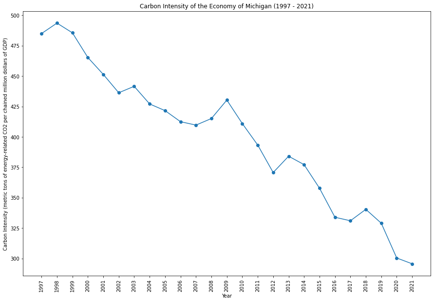

|
|
|  | |
Michigan has a strong manufacturing base and has been working to balance economic growth with environmental concerns. The state is investing in renewable energy and electric vehicle infrastructure. Great Lakes preservation is a priority, with efforts to address water quality issues and protect ecosystems.